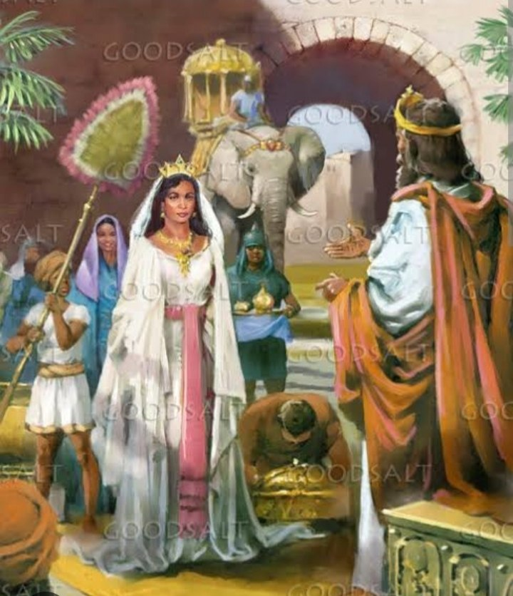
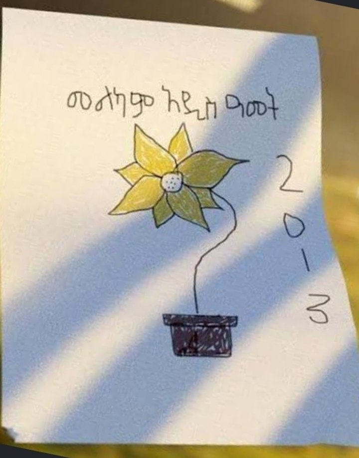

The Living Story of Enkutatash
From ancient royal treasures in Aksum to our neighborhood tradition of hand drawing golden Adey Abeba blooms.
The Royal Homecoming: A Gift of Jewels
The name Enkutatash literally translates to "Gift of Jewels" in Amharic. The tradition traces back roughly three thousand years to Queen Makeda, the Queen of Sheba.
Following her historic journey to visit King Solomon in Jerusalem, she returned to her capital of Aksum in early September. Regional chieftains greeted her by filling her treasury with precious gems known as Enku.

The historic monumental obelisks of Aksum, where chiefs greeted Queen Makeda with jewels.The End of Winter & The Golden Blanket
Ethiopia's rainy season, Kiremt, covers the months of June through August with overcast skies, thunder, and rain.
By late August, the clouds lift to bright sunshine, and the Adey Abeba daisy opens across mountain meadows for a brief two month season.
Why Young Boys Draw & Gift Flowers
On New Year's morning, holiday roles divide into harmonious halves. While girls sing "Abebayehosh" with drums, boys sketch detailed pictures of flowers on paper, writing New Year wishes and the holiday year across each page.
Going door to door, we hand our paper drawings to neighbors and elders as blessings of peace and goodwill. Families warmly invite us in, offering freshly baked holiday bread or small coins.

Handmade art: sketching flower drawings on paper with warm holiday greetings.Continuity into the Meskel Festival
The blooming season of the Adey Abeba continues straight into Meskel on September 27.
During the celebration, tall wooden pyramidal pyres called the Demera are raised, with yellow Adey Abeba bouquets attached to their very top.
The Values Behind Abebayehosh
Every movement, flower, and reciprocal gift reflects shared hospitality and intergenerational blessings.
Symbolism of Yellow
In Ethiopian tradition, the color yellow represents peace, reconciliation, sunshine, and love.
The Abebayehosh Anthem
Translating to "I have seen the flowers," the song celebrates the arrival of spring and sunshine.
Community Generosity
Households welcome children with holiday bread and gifts, nurturing community bonds across generations.